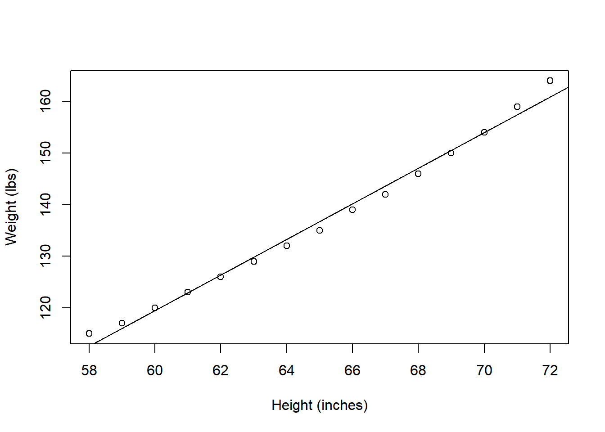
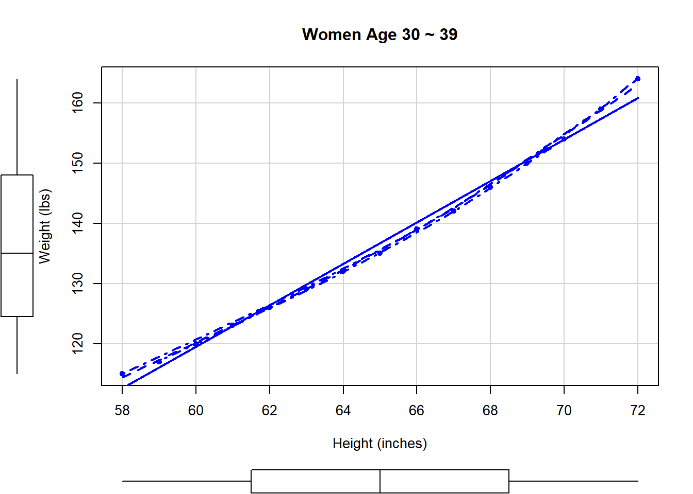
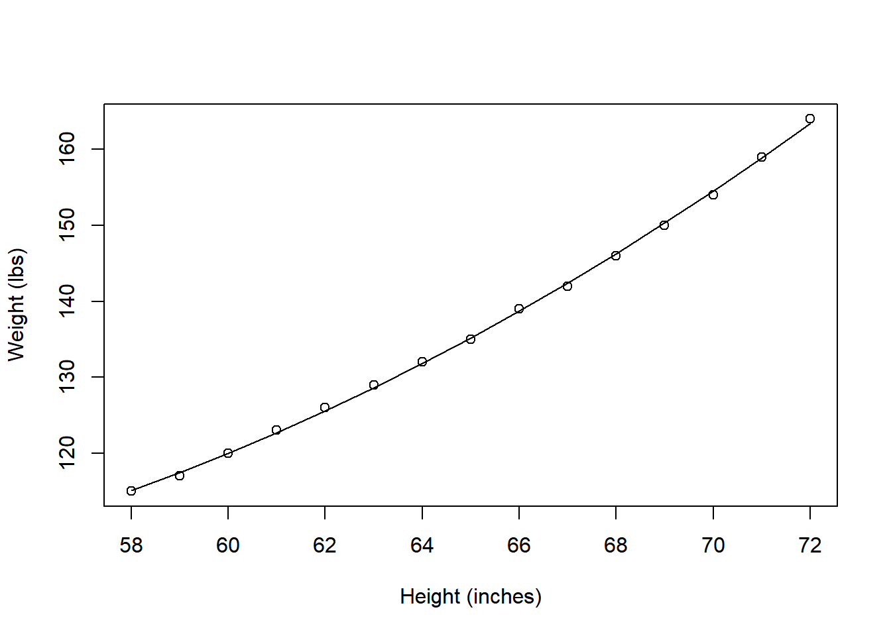

Chapter 11 회귀모형(Regression Model)
11.1 데이터 불러오기
data(women)
str(women)## 'data.frame': 15 obs. of 2 variables:
## $ height: num 58 59 60 61 62 63 64 65 66 67 ...
## $ weight: num 115 117 120 123 126 129 132 135 139 142 ...women(여성 데이터셋) -height: 키(단위:in) -weight: 몸무게(단위:lb)
R에 있는 기본 데이터셋인 women을 불러온다.
2개의 변수와 15개의 관측치가 있다.
11.2 상관 분석
여성의 키와 몸무게의 인과관계를 위한 회귀분석하기 전에,
두 변수의 상관성을 알아본다.
cor(women$height,women$weight)## [1] 0.9954948cor.test(women$height,women$weight)##
## Pearson's product-moment correlation
##
## data: women$height and women$weight
## t = 37.855, df = 13, p-value = 1.091e-14
## alternative hypothesis: true correlation is not equal to 0
## 95 percent confidence interval:
## 0.9860970 0.9985447
## sample estimates:
## cor
## 0.9954948상관계수가 1에 가까울수록 두 변수의 상관력이 높다는 의미다.
0.99로 아주 높다.
##회귀모형 찾기
11.2.1 회귀모형
fit1 <- lm(weight~height, data = women)
summary(fit1)##
## Call:
## lm(formula = weight ~ height, data = women)
##
## Residuals:
## Min 1Q Median 3Q Max
## -1.7333 -1.1333 -0.3833 0.7417 3.1167
##
## Coefficients:
## Estimate Std. Error t value Pr(>|t|)
## (Intercept) -87.51667 5.93694 -14.74 1.71e-09 ***
## height 3.45000 0.09114 37.85 1.09e-14 ***
## ---
## Signif. codes: 0 '***' 0.001 '**' 0.01 '*' 0.05 '.' 0.1 ' ' 1
##
## Residual standard error: 1.525 on 13 degrees of freedom
## Multiple R-squared: 0.991, Adjusted R-squared: 0.9903
## F-statistic: 1433 on 1 and 13 DF, p-value: 1.091e-14- Call: 사용한 식
- Residusals(잔차): 실제값과 오차
- 귀무가설: 회귀계수가 0이다.
- R-squared(결정 계수): 설명력 : 99.1% 만큼 실제값의 산포도와 일치한다.(실제 분산의 얼마만큼 잘 설명하는가)
- 결정 계수는 주어진 종속변수(표본)과 추정한 종속변수 간의 상관계수의 제곱이다.
- F-statistic: 귀무가설: 두 변수는 선형관계가 없다.
선형 회귀 모형의 결과, 절편과 height 통계적으로 둘 다 고도로 유의한 결과가 나왔다.
그리고 R-squared 값이 0.991로 아주 높은 값이 나와 적합한 모형이라 볼 수 있다.
모형의 결과는,
weight = -87.51667 + 3.45 x height
11.2.2 plot
plot(x = women$height, y = women$weight,
xlab = 'Height (inches)', ylab = 'Weight (lbs)')
abline(fit1)
실제 데이터 그래프에 회귀방정식을 그려보면,
거의 일치한 모습을 볼 수 있다.
좀 더 자세한 그래프를 그려보자.
11.2.3 scatterplot
library(car)## Loading required package: carDatascatterplot(
weight ~ height,
data = women,
spread = FALSE,
smoother.args = list(lty=2),
pch = 19,
main = 'Women Age 30 ~ 39',
xlab = 'Height (inches)',
ylab = 'Weight (lbs)'
)## Warning in plot.window(...): "spread" is not a graphical parameter## Warning in plot.window(...): "smoother.args" is not a graphical parameter## Warning in plot.xy(xy, type, ...): "spread" is not a graphical parameter## Warning in plot.xy(xy, type, ...): "smoother.args" is not a graphical parameter## Warning in axis(side = side, at = at, labels = labels, ...): "spread" is not a
## graphical parameter## Warning in axis(side = side, at = at, labels = labels, ...): "smoother.args" is
## not a graphical parameter## Warning in axis(side = side, at = at, labels = labels, ...): "spread" is not a
## graphical parameter## Warning in axis(side = side, at = at, labels = labels, ...): "smoother.args" is
## not a graphical parameter## Warning in box(...): "spread" is not a graphical parameter## Warning in box(...): "smoother.args" is not a graphical parameter## Warning in title(...): "spread" is not a graphical parameter## Warning in title(...): "smoother.args" is not a graphical parameter
#lty는 ling type
#회귀분석후 그래프까지 나타내줌
#회귀분석 결과를 선으로 나타난다.(평활선(loess)(smoother):모난부분을 부드럽게 해준다.)
#직선보다 더 좋게 만들 수 있다.(회귀모형에 대한 힌트를 준다.)11.3 다항회귀모형
독립변수의 차수가 2차 이상인 회귀모형이다.
fit2 <- lm(weight~height+I(height^2), data = women)
summary(fit2)##
## Call:
## lm(formula = weight ~ height + I(height^2), data = women)
##
## Residuals:
## Min 1Q Median 3Q Max
## -0.50941 -0.29611 -0.00941 0.28615 0.59706
##
## Coefficients:
## Estimate Std. Error t value Pr(>|t|)
## (Intercept) 261.87818 25.19677 10.393 2.36e-07 ***
## height -7.34832 0.77769 -9.449 6.58e-07 ***
## I(height^2) 0.08306 0.00598 13.891 9.32e-09 ***
## ---
## Signif. codes: 0 '***' 0.001 '**' 0.01 '*' 0.05 '.' 0.1 ' ' 1
##
## Residual standard error: 0.3841 on 12 degrees of freedom
## Multiple R-squared: 0.9995, Adjusted R-squared: 0.9994
## F-statistic: 1.139e+04 on 2 and 12 DF, p-value: < 2.2e-16fit1과 마찬가지로 적합한 회귀모형이다.
R-squared가 조금 더 높은 것으로 보아
더 많은 데이터를 설명해줄 수 있는 모형이다.
모형의 결과는,
weight = 261.87818 - 7.34832 x height + 0.08306 x height^2
with(data = women, expr = {
plot(x = height, y = weight, xlab = 'Height (inches)', ylab = 'Weight (lbs)')
lines(x = height, y = fitted(fit2))
})
그래프로 보았을때, 확실히 fit1보다 더 많은 데이터에 적합하다.